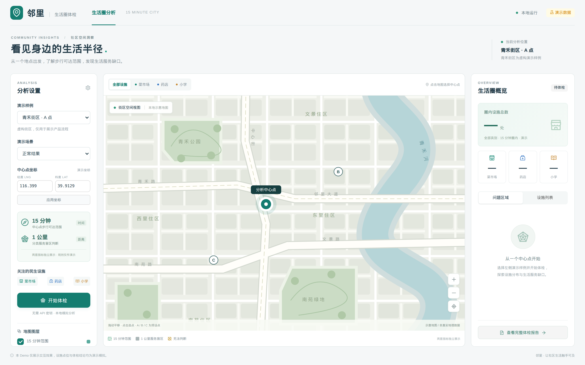
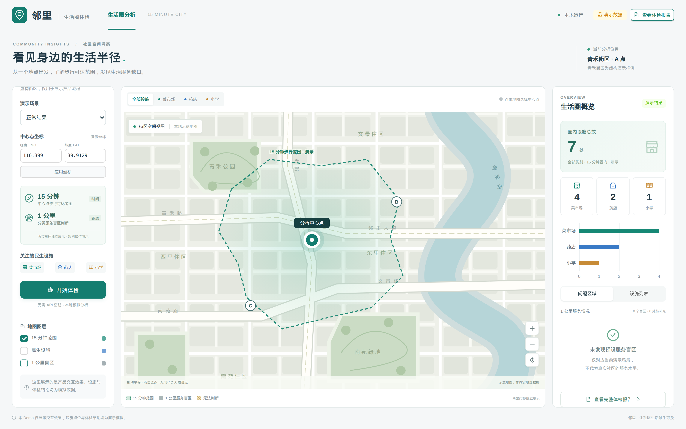
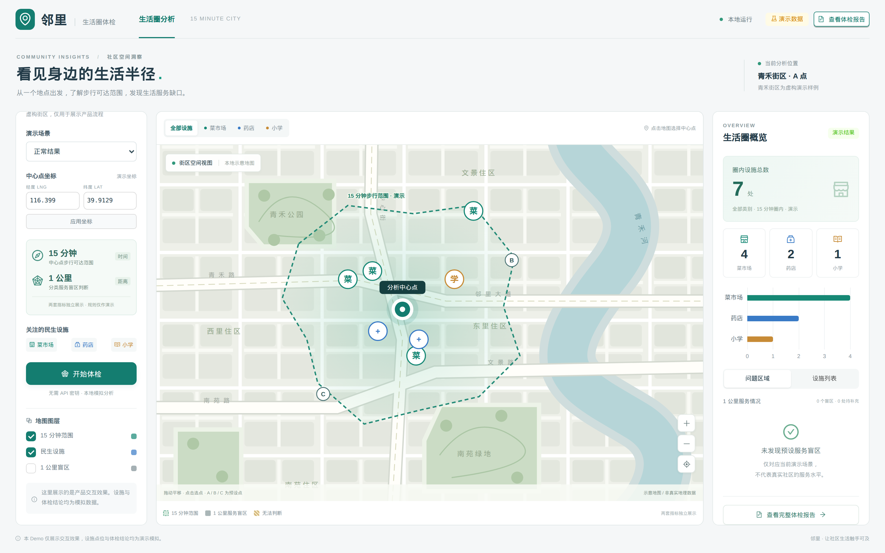
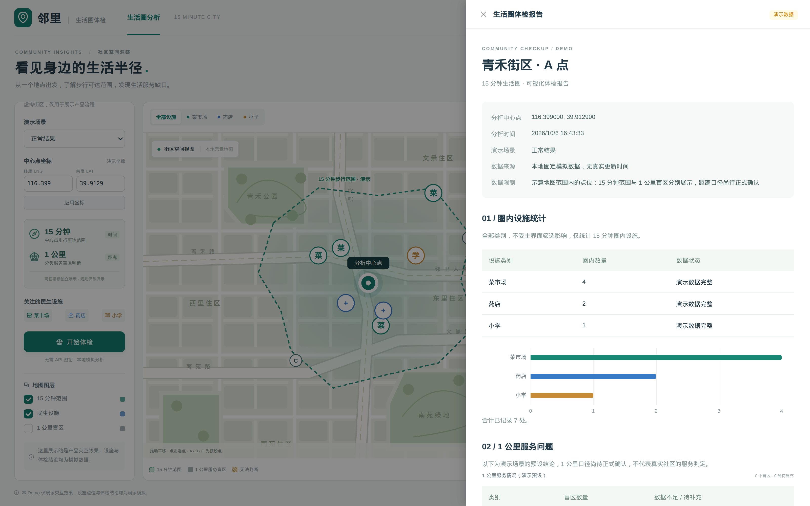

15 分钟能走到哪里？
从中心点出发，基于步行路网展示真实可达范围。绕行、障碍、未知区域和计算预算都被明确保留。
查看可达性方法社区空间洞察 · 可解释工作流
把真实步行路径、民生设施和服务缺口放到同一张地图上。先呈现可核对的空间证据，再给出有边界的辅助判断。
离线 Demo 地址待配置，可先查看本地启动说明
WHY IT MATTERS / 为什么需要它
直线距离、设施数量和一句“覆盖良好”，都不足以说明真实的社区步行体验。生活圈把判断拆开，把证据留下。
从中心点出发，基于步行路网展示真实可达范围。绕行、障碍、未知区域和计算预算都被明确保留。
查看可达性方法逐类检查菜市场、药店和小学，不把“15 分钟不可达”替代为服务缺口，也不把数据不足当成缺失。
理解两套规则CAPABILITIES / 你可以完成什么
使用预设样例、地图选点或输入经纬度，清楚知道本次分析从哪里开始。
中心点 / 坐标在地图上查看 15 分钟范围、已知可达区域、未知区域和计算质量。
路网 / 等时圈按类别筛选菜市场、药店和小学，查看名称、位置、圈内状态及来源证据。
设施 / 证据汇总条件、结果、服务缺口、未知部分、数据来源和限制说明，方便复核。
结果 / 限制SCREENSHOTS / 产品截图




METHOD / HOW IT WORKS
前端负责把过程和结果讲清楚，后端负责任务编排与证据留存，百度与 OSM 提供不同层次的空间数据。Demo 则以固定模拟数据复现完整流程。
通过多个方向、局部扫描和边界细化获取 15 分钟圈证据，结果保留预算停止和未知区域。
本机配置后运行使用 OSM 路网辅助范围构建，再用百度步行结果验证；硬约束与显示几何分开处理。
本机配置后运行离线实验能力，保留在算法与后端工具中，当前不作为浏览器或生产 HTTP 入口。
离线实验 · 未上线| 指标 | 数值 | 说明 |
|---|---|---|
| 单次构圈耗时 | ||
| 边界划分精度 | ||
| 设施匹配准确率 | ||
| 报告生成耗时 |
TRUST & LIMITS / 可信度边界
一个好的空间工具不应该用完整的视觉效果掩盖缺失数据。每一次分析都要说明它知道什么、还不知道什么，以及结论不能推到哪里。
用于验证用户流程、地图、统计和报告的一致性，不代表真实社区结论。
一个回答“能走到哪里”，一个回答“周边是否存在某类设施”，页面不会相互替代。
数据不足、部分结果、预算停止和服务异常都会保留状态，并进入结果说明。
设施数量不代表容量、质量、营业状态或使用资格，也不自动生成综合评分。
GUIDES / 操作指南
克隆仓库后，在项目根目录执行 npm install 与 npm run dev，然后在浏览器中打开提示的本地地址即可。
在 Demo 的选点面板中切换为「手动输入」，填写经纬度后确认。坐标系为 WGS84，注意顺序为纬度在前。
表示该方向数据不足、预算停止或服务异常，系统不会将其静默标记为不可达。可在报告的结果说明中查看详情。
前者基于步行路网回答「能走到哪里」，后者基于直线距离回答「周边是否存在某类设施」。两者独立计算，不可相互替代。